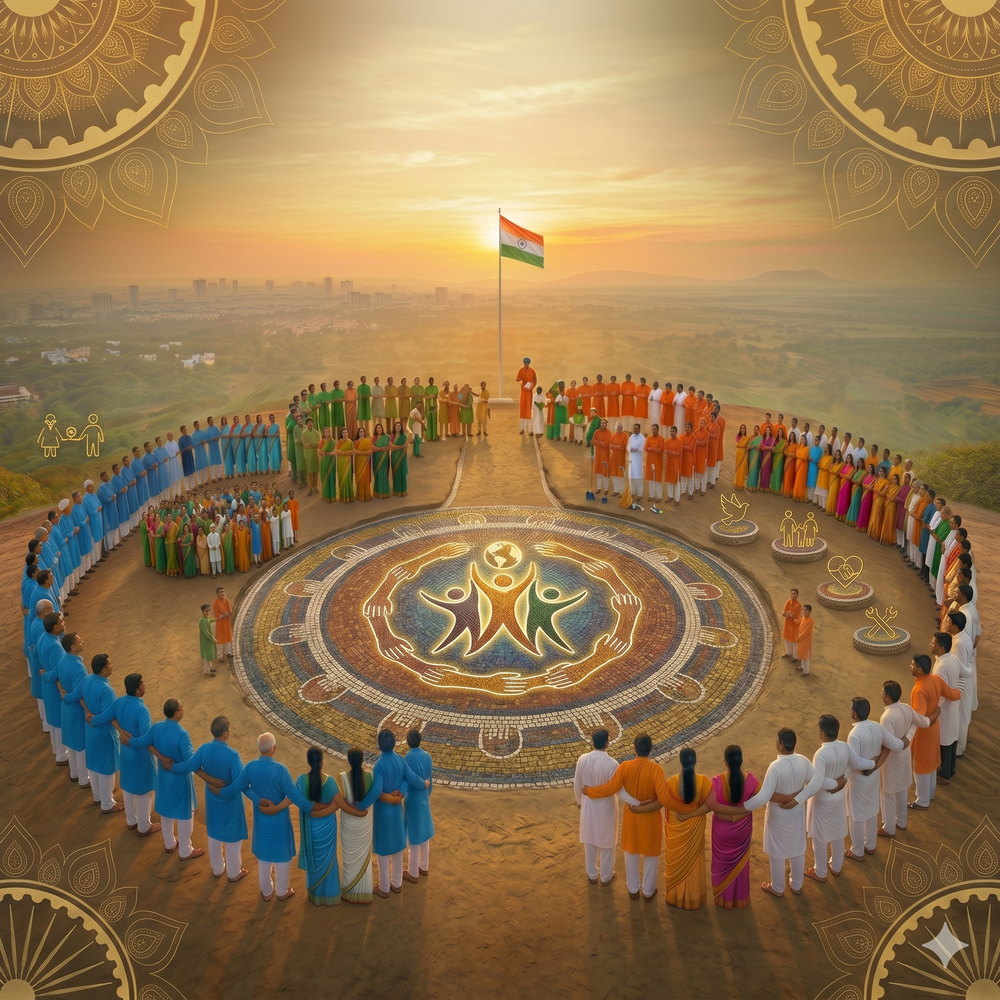

A people-powered movement dedicated to peace, unity, social service and meaningful change across India.

OneDayMataram is a social movement created to inspire people to come together for the betterment of society. We believe that even a single day of united action can create lasting impact and meaningful transformation.
Our mission is to encourage individuals, communities, volunteers and youth to actively participate in social service, peace initiatives, awareness campaigns and nation-building activities.
We are driven by compassion, unity, responsibility and the belief that positive change begins with collective action.
Building a peaceful, united and socially responsible India.
To create a society where people unite beyond differences and work together for peace, humanity and national progress.
To inspire and empower volunteers to take action through social service, awareness campaigns, community support and public initiatives.
The principles that guide our movement and actions.
Stronger communities are built when people stand together.
Helping others with kindness, empathy and humanity.
Creating social awareness that leads to responsible action.
Encouraging volunteer-driven initiatives for positive impact.
OneDayMataram aims to build a nationwide network of volunteers, communities and changemakers who are committed to creating meaningful social impact through unity and service.
From awareness campaigns to public initiatives and community support programs, our journey is just beginning. Together, we can create a stronger and more compassionate future.
Become a Volunteer